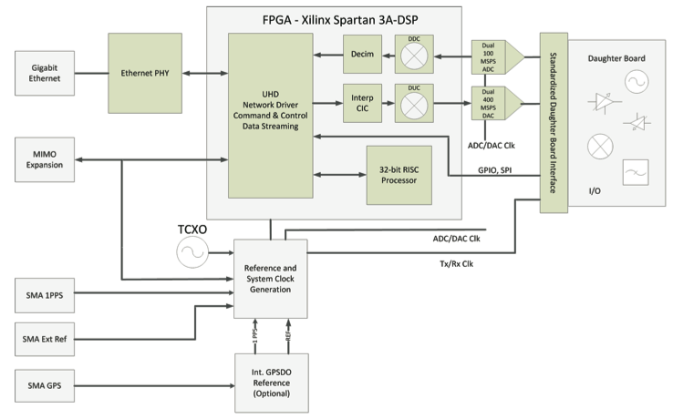

Introduction¶


{kind=link}
Software-defined Radio (SDR)¶
Replace “digital ASIC” components above by more programmable implementations, such as FPGA and general purpose CPU/GPU
More recent SDR developments also make the RF frontends programmable to various degrees
Advantages: Flexible, short development time, reconfigurability (cognitive radios), high-speed implementation possible with FPGAs, …
Disadvantages: More expensive, higher power consumption, …
Popular SDR software development platforms: GNU Radio, MATLAB/Simulink, Labview, …
USRP Radios¶
USRP stands for “Universal Software Radio Peripheral”
A collection of relatively low-cost, high-performance SDRs developed by Ettus Research
A USRP radio generally consists of a “motherboard” and a number of interchangeable “daughterboards” (except for the B-series and E-series)
A daughterboard typically contains an RF frontend with programmable mixers (frequency) and amplifiers (gains)
The motherboard typically contains high-speed ADCs, DACs, an FPGA, and other interfacing and controlling circuitry to communicate with a general purpose PC via USB, Ethernet, or PCI bus
One may program (in VHDL) the FPGA on the motherboard to perform all IF and baseband processing
Alternatively the more “software-defined” approach is to have the FPGA programmed to perform digital frequency mixing (the mixers in the daughterboard have only a finite set of mixing frequencies; hence need to do fine-frequency mixing digitally), up/down conversion, filtering, and transfer of digital samples to the PC. All baseband processing is done by software in the PC. We will employ this latter approach here.
USRP N210 Radios used in class¶
Motherboard¶
{kind=link}
DAC/ADC resolution: 16/14 bits
Maximum transfer rate to/from host host PC: 25 M complex samples/s (16-bit) or 50 M complex samples/s (8-bit)
Digital up/down convertors:
Needed to reconcile the differences between host sampling rates and ADC/DAC sampling rates
Host sampling rates should be selected carefully to work with various rate conversion operations and filtering in DDC/DUC

Daughterboards¶
SBX:
2 quadrature RF chains: one for TX/RX and one for RX only (RX2)
Each RF chain has its own LO and frequency synthesizer; hence capable of supporting full-duplex operation
Programmable TX & RX amplifier gains: 0 - 31.5 dB with 0.5 dB steps
Analog bandwidth: 40 MHz (TX & RX)
Noise figure: 5dB typical
Tunable frequency range: 400 MHz - 4.4 GHz
TX power: 30 - 100 mW typical
CBX:
Same as SBX, except having frequency range from 1.2 - 6.0 GHz
Basic TX and RX:
No RF chain, simply interface between motherboard and external RF frontends (I & Q channels)
Analog BW: 250 MHz
Can be used (via direct connection to antenna and aliasing) as low-sensitivity RX frontend around the FM band
UHD¶
UHD = USRP Hardware Driver
A set of C++ APIs for controlling USRP radios and pushing/pulling samples to/from them
We will use these UHD APIs throughout the course
GNU Radio¶
A software platform for users to build SDR applications
Construct signal flow graphs that link source, processing, and sink blocks together to implement SDR applications
Main components:
A scheduler that controls and implements signal and data flows among various blocks along signal flowgraphs
Driver APIs for most commercially available SDR hardwares
A very large collection of pre-defined source, sink, and processing blocks
Three levels of programming available:
GNU Radio Companion: GUI signal flow graph IDE
Python: Build signal flowgraphs and other GUIs
C++: Build source, sink, and processing blocks
Although we will NOT use GNU Radio in this class, I suggest everyone learn it because GNU Radio is a great tool for developing SDR applications.
Why not use GNU Radio as our teaching platform:
We will study “physical-layer” communication and signal processing techniques/algorithms that are used to implement SDRs. We will definitely learn better by implementing them from scratch.
I believe learning the software plumbings that build SDRs is also very important. GNU Radio is great but it hides most of the plumbing stuff.
Eliminate the significant overhead of learning how to build processing blocks in GNU Radio and work with the GNU Radio scheduler.
References and further reading¶
- 1
Jeffrey H. Reed. Software radio: a modern approach to radio engineering. Prentice Hall Professional, 2002. ISBN 0-13-081158-0.
- 2
GNU Radio Project. GNU Radio website. URL: https://www.gnuradio.org/about/.
- 3
Ettus Research. UHD information website. URL: https://kb.ettus.com/UHD.